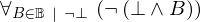
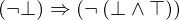
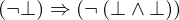
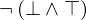
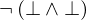

Show the Proof¶
In [1]:
import proveit
# Automation is not needed when only showing a stored proof:
proveit.defaults.automation = False # This will speed things up.
proveit.defaults.inline_pngs = False # Makes files smaller.
%show_proof
Out[1]:
| step type | requirements | statement | ||
|---|---|---|---|---|
| 0 | instantiation | 1, 2, 3 | ⊢  | |
 : :  , ,  : :  , ,  : :  | ||||
| 1 | theorem | ⊢  | ||
| proveit.logic.booleans.fold_conditioned_forall_over_bool | ||||
| 2 | deduction | 4 | ⊢  | |
| 3 | deduction | 5 | ⊢  | |
| 4 | instantiation | 7, 6 | ⊢  | |
:  | ||||
| 5 | instantiation | 7, 8 | ⊢  | |
:  | ||||
| 6 | axiom | ⊢ | ||
| proveit.logic.booleans.conjunction.and_f_t | ||||
| 7 | theorem | ⊢  | ||
| proveit.logic.booleans.negation.negation_intro | ||||
| 8 | axiom | ⊢  | ||
| proveit.logic.booleans.conjunction.and_f_f | ||||